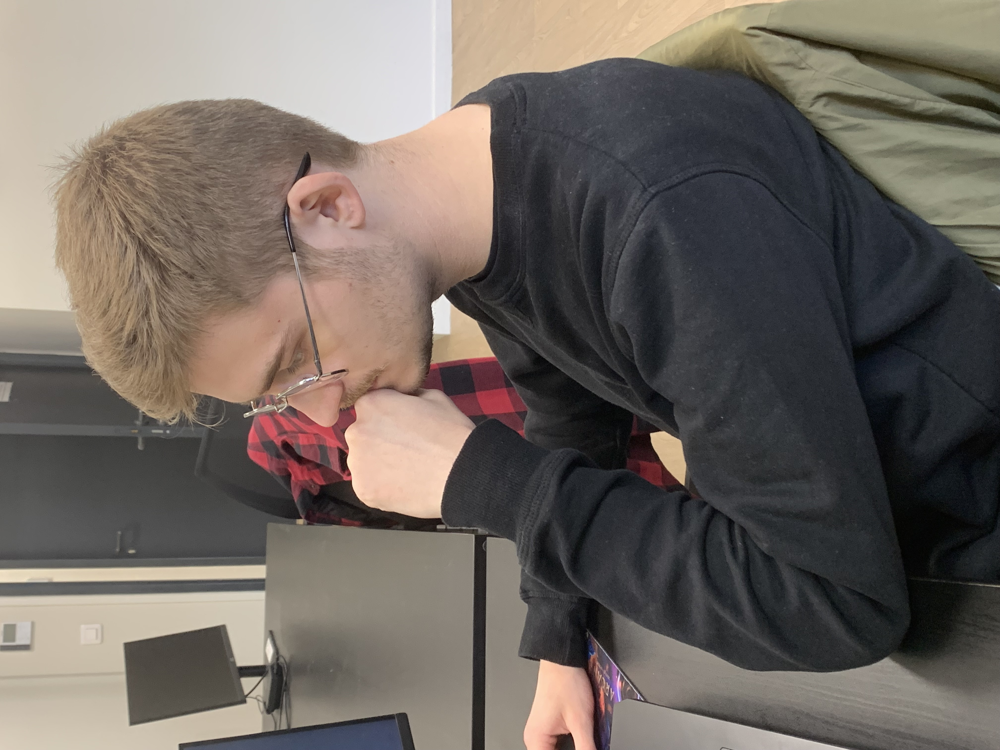
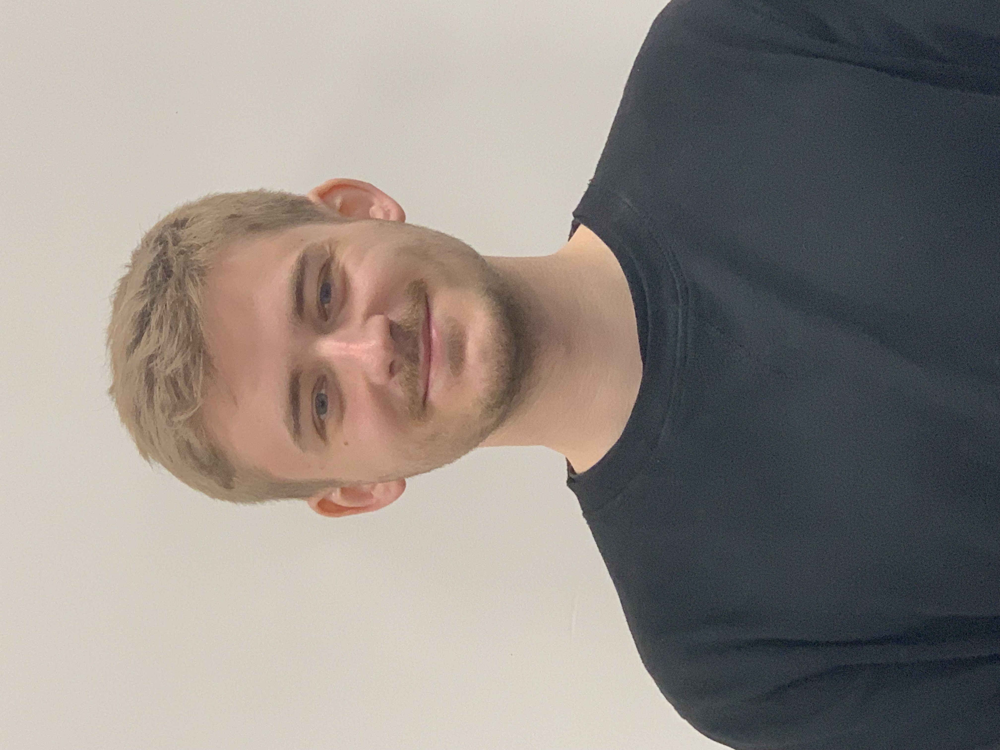
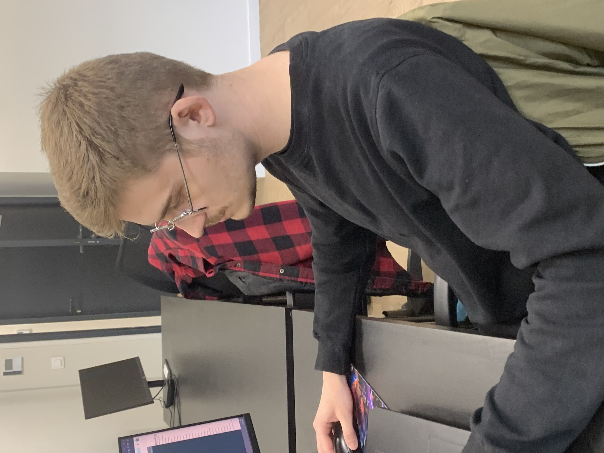

À propos de moi
J'ai grandi avec les jeux-vidéos grâce à mon père. Cela m'aide à savoir ce qui plairait à un joueur casual comme lui ou un hardcore comme moi.
J'aime conceptualiser des mécaniques de gameplay qui provoqueront l'implication naturelle du joueur dans le jeu.
Pour moi le temps du joueur est très important.
" Comment éviter qu'il perde son temps ? Comment lui donner cette sensation de progresser tout le temps ? "
Ce que j'apporte au projet

Mes forces clés sont :
- • Sensibilité à l'expérience utilisateur : J'analyse la manière dont les joueurs interagissent avec les mécaniques afin d'identifier rapidement les points de friction. Mon objectif est de concevoir des expériences intuitives, où les décisions du joueur sont claires et satisfaisantes.
- • Conception et prototypage de mécaniques immersives : Je suis capable d'imaginer, structurer et tester des mécaniques qui renforcent l'engagement et l'immersion. Grâce au prototypage rapide, je peux itérer efficacement, valider des idées et ajuster les interactions pour garantir une expérience cohérente et captivante dès les premières phases de développement.
- • Recherche constante de polish : Je suis attentif aux détails et attaché à la qualité perçue du produit final. Cela se traduit par une volonté d'améliorer en continu les interactions, les feedbacks visuels et sonores, et l'équilibrage global, afin d'offrir une expérience aboutie, cohérente et agréable à utiliser.
Mes compétences principales :
- • Core mechanics
- • Expérience utilisateur (UX)
- • Systèmes de puzzles
- • Systems design
- • Design en réalité virtuelle (VR)
Outils que j’utilise régulièrement :
- • Unity
- • Outils bureautiques (Google Docs, Sheets / Word, Excel)
- • Photoshop
Soft skills
- • Analyse et résolution de problèmes
- • Adaptabilité
- • Travail en équipe
Projets
Sky Legends - An Aeropostal Epic
Une description rapide pour donner envie de cliquer.
Découvrir le projet →Vision du Design
• Le Design au service du Brief
"Qu’il s’agisse d’une page blanche ou d’une demande spécifique (bestiaire imposé, contraintes de lieu), ma priorité est de répondre aux objectifs du projet. Je conçois mes niveaux en faisant pivoter l’expérience autour des spécificités demandées pour en extraire le maximum de potentiel ludique."
• Le respect du temps du joueur
"Chaque minute de jeu doit avoir une valeur. Je traque activement les temps morts, le backtracking inutile et les déséquilibres frustrants (hitbox imprécises, difficulté injuste). Mon but est de proposer un challenge millimétré où l’échec est un apprentissage, jamais une punition technique."
• Rythme et Progression organique
"J'adapte le curseur de difficulté selon la maturité du joueur dans son parcours. En variant les situations de jeu et en proposant des choix de navigation (même factices), je m'assure que le sentiment de progression reste gratifiant et que le rythme évite toute répétition."
Mon expérience
Formation
CREASUP Digital — Mastère en Game Design (Cursus en 5 ans)
Projets
- • Sky Legends - An Aeropostal Epic — Game / Level Designer
- • Ecol'Café VR — Interaction / UX Designer
Langues
- • Français — langue native
- • Anglais — niveau C1 (courant professionnel)